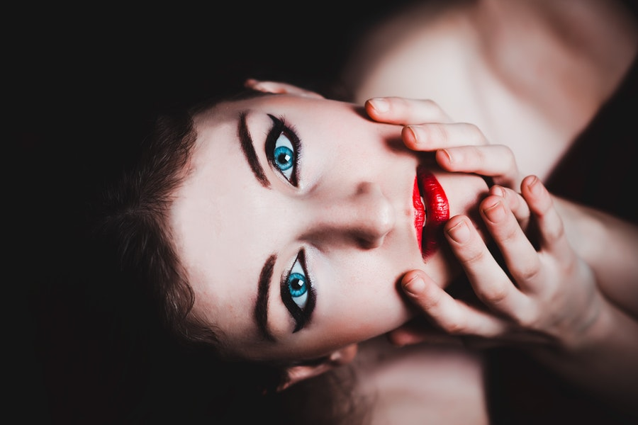
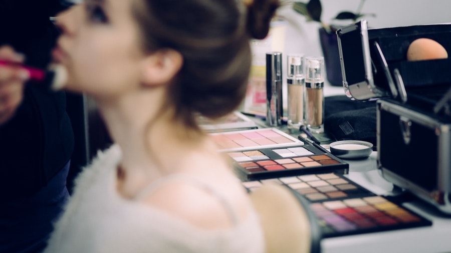
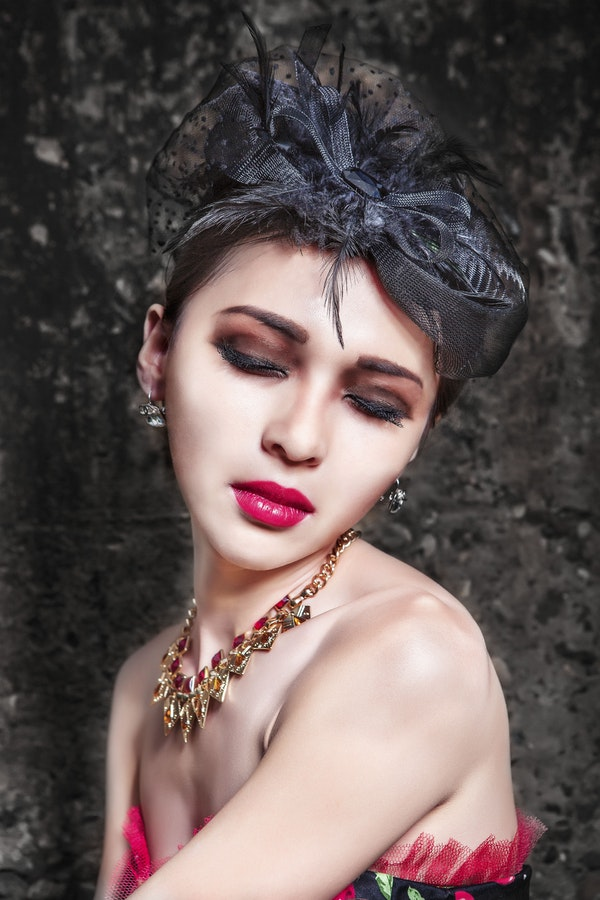
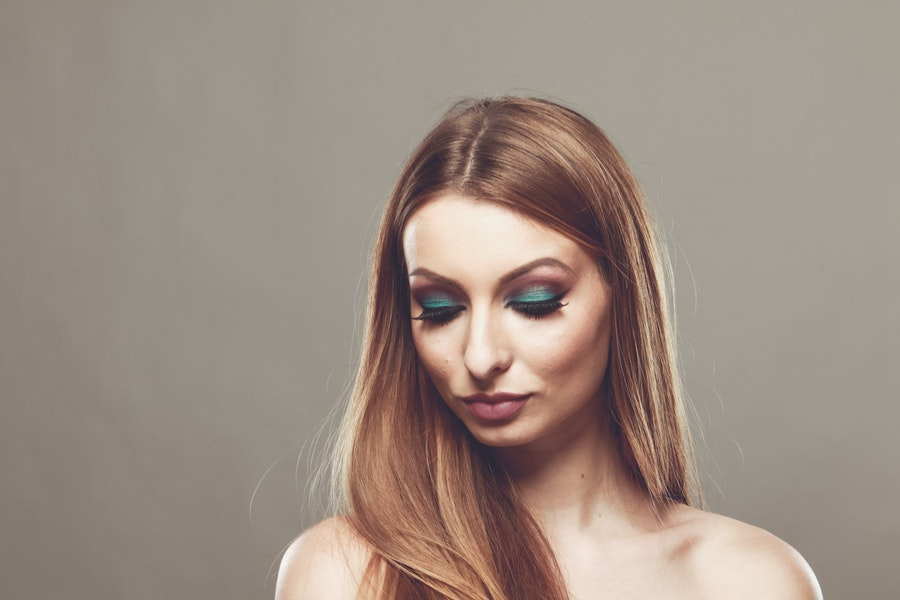
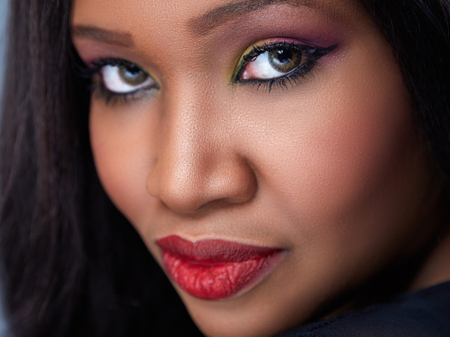
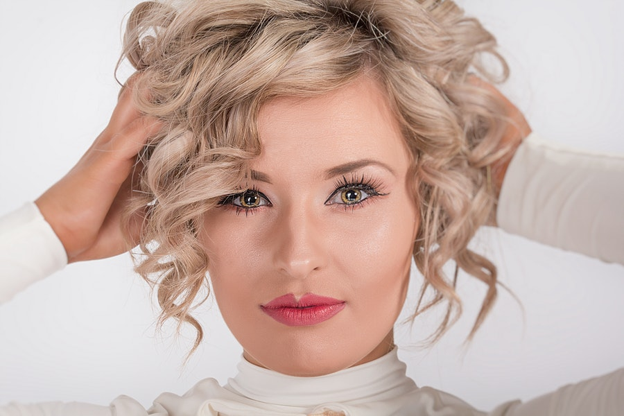

ABOUT
-
In the animal rights movement, cruelty-free is a label for products or activities that do not harm or kill animals. On the other hand, there are lots of non-cruelty free Products which are tested on animals, since these tests are often painful and cause the suffering and death of millions of animals every year. Trucare is an advocacy that aims to promote cruelty free-makeup and to raise awareness. Hoping that millenials would take the time to read and visit our advocacy and be aware of the types of makeups that are endangering our animals.
Make Ups
-
Click the button to show the list of cruelty-free make ups.
-
Click the button to show the list of non-cruelty free make ups.
-
In the animal rights movement, cruelty-free is a label for products or activities that do not harm or kill animals. Products tested on animals are not considered cruelty-free, since these tests are often painful and cause the suffering and death of millions of animals every year.

Media
-

-

-

-

-
-
-

-

-
Contributors
-
Coleen Palattao
mariecoleen.palattao@benilde.edu.ph -
Karlos Arcega
carlosgabriel.arcega@benilde.edu.ph -
Kristine Duyongco
kristine.duyongco@benilde.edu.ph -
Neomi Mendoza
neomiallysonanne.mendoza@benilde.edu.ph -
Jillian Machura
Jillian.machura@benilde.edu.ph